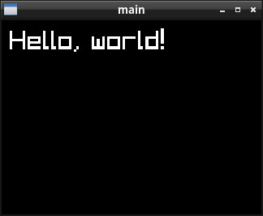

參考資訊：
https://www.raylib.com/
https://github.com/raysan5/raylib
main.c
#include <stdio.h>
#include <stdlib.h>
#include "raylib.h"
int main(int argc, char *argv[])
{
InitWindow(320, 240, "main");
SetTargetFPS(60);
while (!WindowShouldClose()) {
BeginDrawing();
ClearBackground(BLACK);
DrawText("Hello, world!", 10, 10, 32, WHITE);
EndDrawing();
}
CloseWindow();
return 0;
}
編譯、測試
$ gcc main.c -o main -lraylib $ ./main
